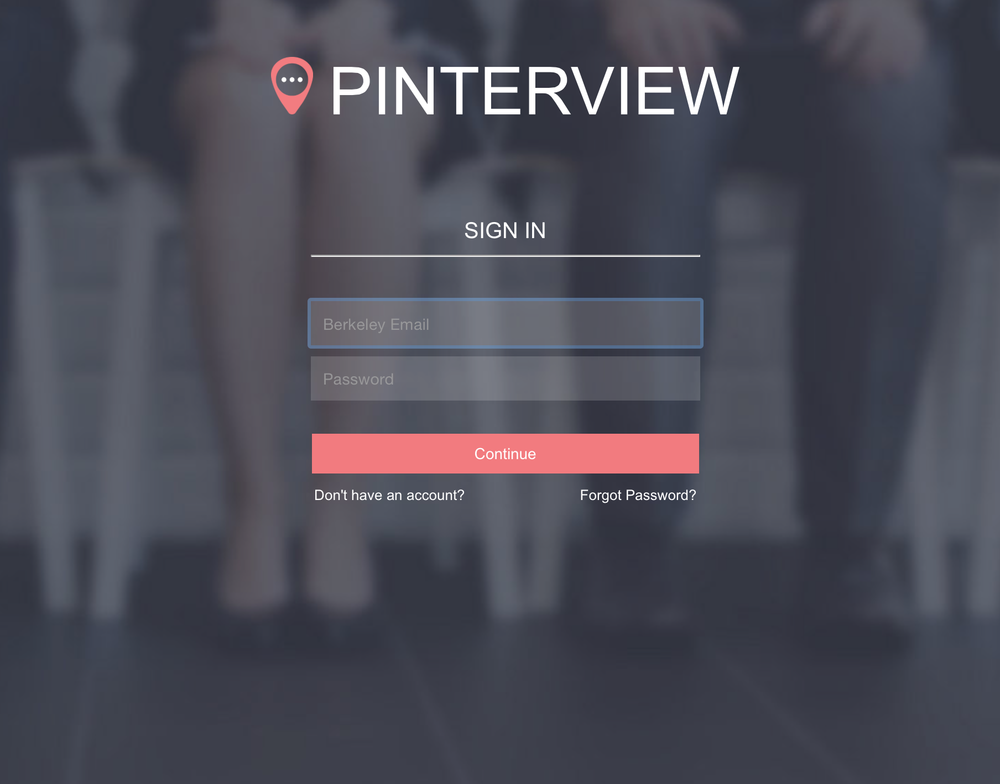
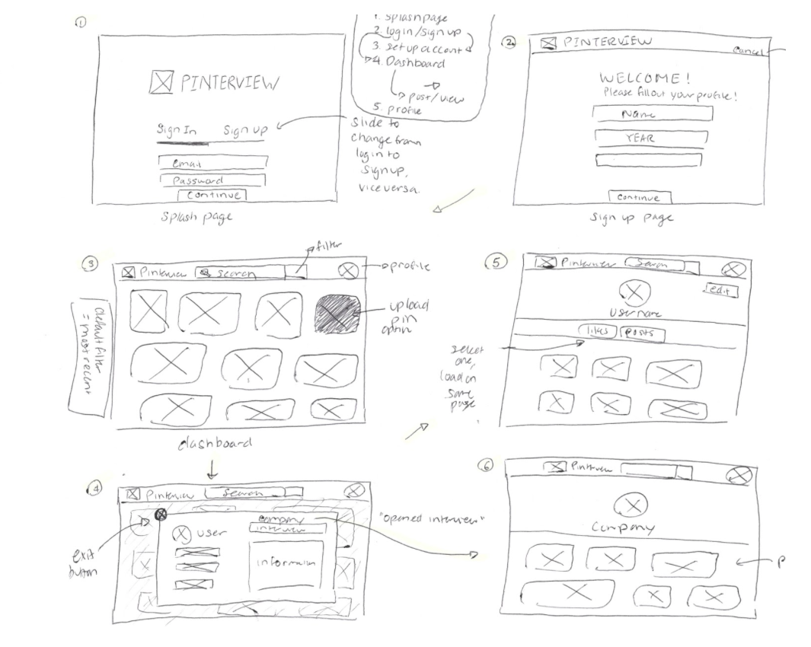
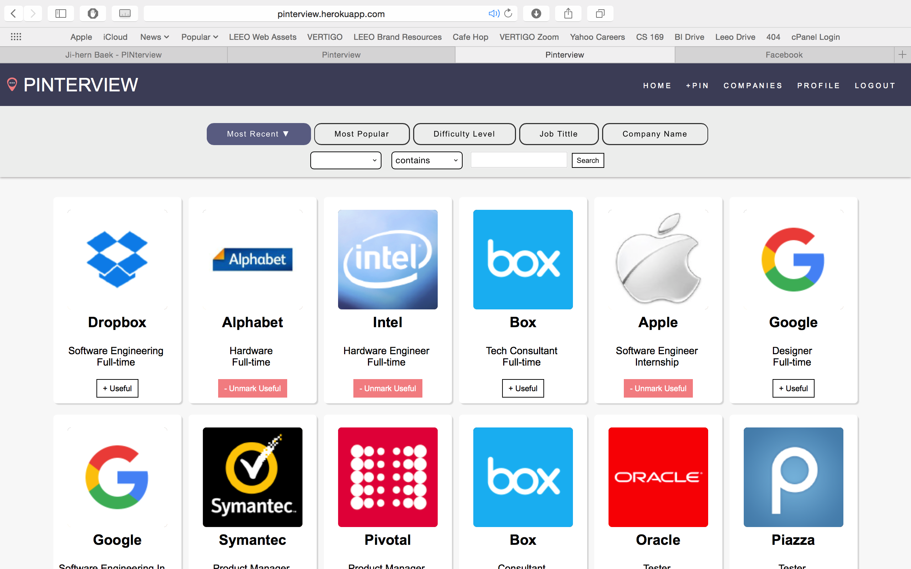
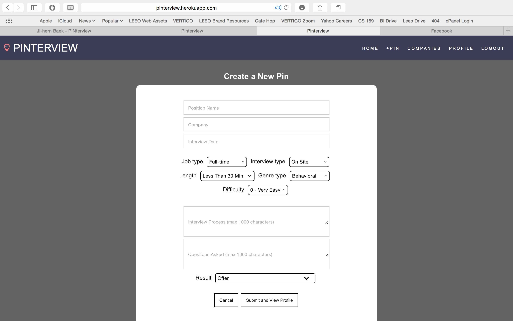
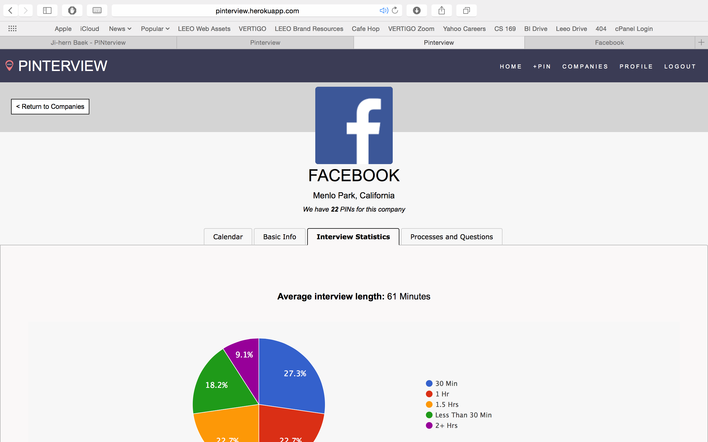
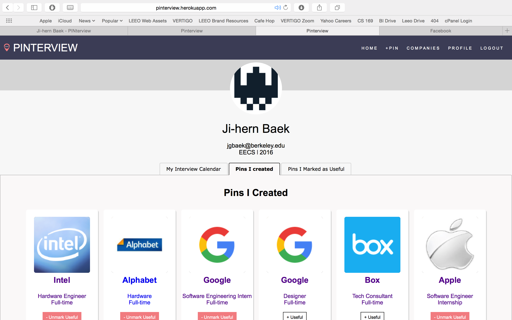

PINterview
This past fall semester, I was enrolled in Computer Science 169: Software Engineering, a course dedicated to teaching students how to build large software systems. Throughout the duration of the course, my team and I developed a web platform for Berkeley students to share and find information regarding past interview experiences. Our identifying feature resides with the pinboard visualization, modeled after Pinterest's dashboard view. My contributions include design work and front end implementation.
See Our Site
The Project
A number of student proposals were selected at the beginning of the semester, at which point students submitted their project preferences. I was placed under PINterview, as I figured it would be a good exercise for a designer. My team and I met extensively to determine our framework and backend architecture. Specifically, we used Ruby on Rails to develop our platform. The front end design and implementation has been determined heavily by Will and myself.

Wireframes
Because each project check-in extended only two weeks, we had to move fast. We worked agilely and replicated much of the same development principles found within the tech industry. Accordingly, I was tasked with drawing out a quick wireframe sketch.

Implementation
Read Our Final Report   